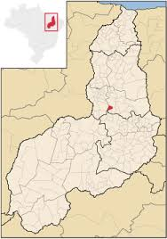

Sobre nós

francinopolis Francinópolis é um município brasileiro do estado do Piauí. Localiza-se a uma latitude 06°23'45" sul e a uma longitude 42°15'43" oeste, estando a uma altitude de 245 metros. Sua população estimada em 2022 era de 4.505 habitantes.
No mês de julho acontece o festejo da cidade de Francinópolis. Famosa na região, a festa faz com que a cidade receba o maior número de turistas durante todo o ano.
Antigo povoado Papagaio, formado a partir do estabelecimento de retirantes das secas do Ceará. Foi emancipado através da lei nº 2.112, de 12 de junho de 1961.
Nossa Terra, Nosso Orgulho
cidade de gente acolhedora
Nossa cidade
Veja abaixo onde nos encontrar!
"Nossos Produtos
- legumes
- frutas
- mel